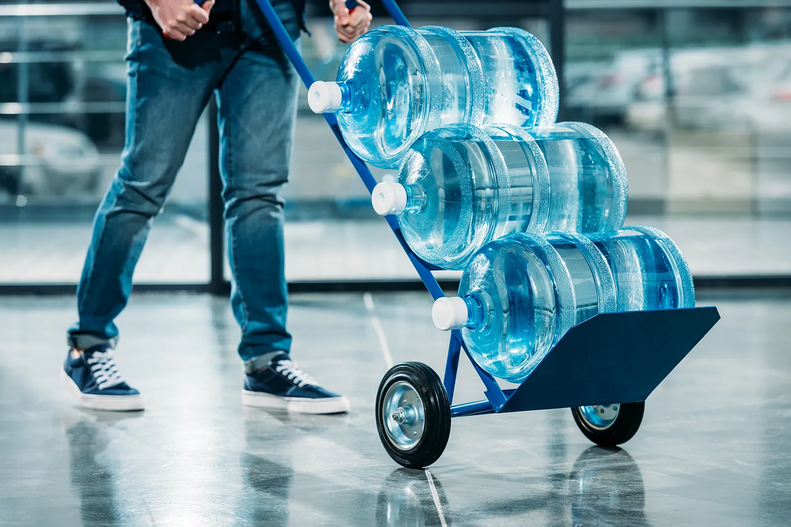

<div class="our-history">
    <section class="our-history_top">
        <div class="fresh-water__foto">
            
        </div>
        <p>- ABOUT -</p>
        <h3>Our History</h3>
        <p>We are water experts in the United States.</p>
        <p>Sparkle started as a small spring water delivery business for a few neighborhoods when Tom Johnson, the founder, decided to filter spring water firstly for his family, then for family friends. It was just a small family company that delivered to different houses on the street. Things started to grow pretty fast though.</p>
        <p>Mr. Jonson bought the professional certified equipment and researched the best places with the cleanest water. Firstly these were just territories in the neighborhood and nearby; later they spread all over the States. Sparkle received an official FDA certification and got a license - that's where things became really serious.</p>
    </section>
</div>